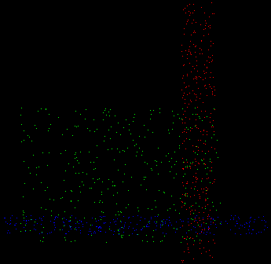

sbt "run -l TWOJ_LOGIN -p TWOJ_PROGRAM -seed 1 -n 10"Przesłać do mnie plik results-TWOJ_LOGIN.csv który powstanie oraz plik alg-TWOJ_LOGIN.txt w którym w 3 zdaniach opiszesz swój algorytm. W pierwszej linii opisu musi najdować się imię i nazwisko.
Punktacja: 0 - 3 punkty w zależności od wyniku.
Osoba która zrobi cokolwiek rozsądego może się spodziewać 3 pkt.
Anonimowe wyniki są tutaj.
 Dana jest seria punktów w kwadracie jednostkowym. Punkty wygenerowane są z jednego z trzech prostokątów. Twoim zadaniem jest odgadnięcie z którego z prostokątów pochodzi każdy punkt.
Każde zgadnięcie musi nastąpić od razu po otrzymaniu współrzędnych punktu przed otrzymaniem współrzędnych następnego punktu. Zgadnięcie polega na wypisaniu trzech liczb proporcjonalnych (zostaną one podzielone przez ich sumę) do prawdopodobieństw pochodzenia z każdego z prostokątów.
Każdy z prostokątów jest losowany niezależnie. Wszystkie liczby losowane są z jednorodnych rozkładów prawdopodobieństwa. Najpierw losowane są szerokość(w) i wysokość(h) z przedziału [0,1]. Następnie losowane są współrzędne x i y lewego górnego rogu (układ współrzędnych z odwróconą osią OY) z przedziałów [0, 1-w] i [0, 1-h]. Losowana jest także liczba p z przedziału [0, 1]. Liczby p wszystkich prostokątów zostaną znormalizowane (podzielone przez ich sumę).
Każdy z punktów w serii jest losowany niezależnie i w taki sam sposób. Najpierw losowany jest prostokąt z prawdopodobieństwem p (znormalizowane). Następnie losowany jest punkt z wewnątrz - współrzędne px i py losowane są z przedziałów [x, x+w], [y, y+h].
Oceną serii jest liczba tritów (jednostka informacji, jeden trit to log2(3) bitów), które twój program wyłowi z danych ponad rozwiązaniem trywialnym (zwracającym równe prawdopodobieństwa dla każdego prostokąta).
Jeżeli dla danego punktu twój program zwrócił prawdopodobieństwa (po znormalizowaniu): a, b, c, podczas gdy punkt ten pochodził z prostokąta A, to za ten punkt dostaniesz log3 (a) + 1 punktów. Jeżeli pochodził z prostokąta B to dostaniesz log3 (b) + 1 punktów. Itd. Oceną serii jest to suma ocen 1000 pojedynczych punktów.
Zostanie ocenionych wszystkich 3! = 6 możliwych interpretacji odpowiedzi programu i jako punktację serii przyjmiemy najlepszą ocenę.
Ostateczna punktacja programu jest średnią z punktacji wielu serii.
Program dostanie współrzędne punktu oddzielone spacją. Następnie powinien wypisać trzy nieujemne liczby oddzielone pojedynczą spacją. Po czym proces się powtórzy. Program powinien zakończyć działanie kiedy napotka EOF (strumień zostanie zamknięty) (Ctrl-D pod Linuksem, chyba Ctrl-Z pod Windowsem).
Mimo że w tym zadaniu oceniane będzie jedynie pierwszych 1000 punktów to twój program powinien być w stanie obsłużyć 2^16 punktów.
Średni czas klasyfikacji jednego punktu powinien wynosić nie więcej niż 2 ms na maszynie students. Jeżeli czas działania programu na danej 1000 punktowej serii przekroczy 2 sekundy, program dostanie za nią zero punktów.
Wizualizator można znaleźć tutaj. lub używając komendy:
git clone https://lukaszlew@github.com/lukaszlew/Mondrian-Clustering.gitPrzykład programu możemy znaleźć w katalogu example_solution.